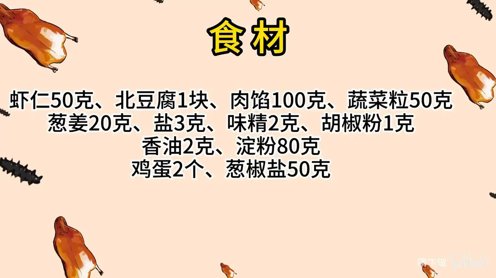
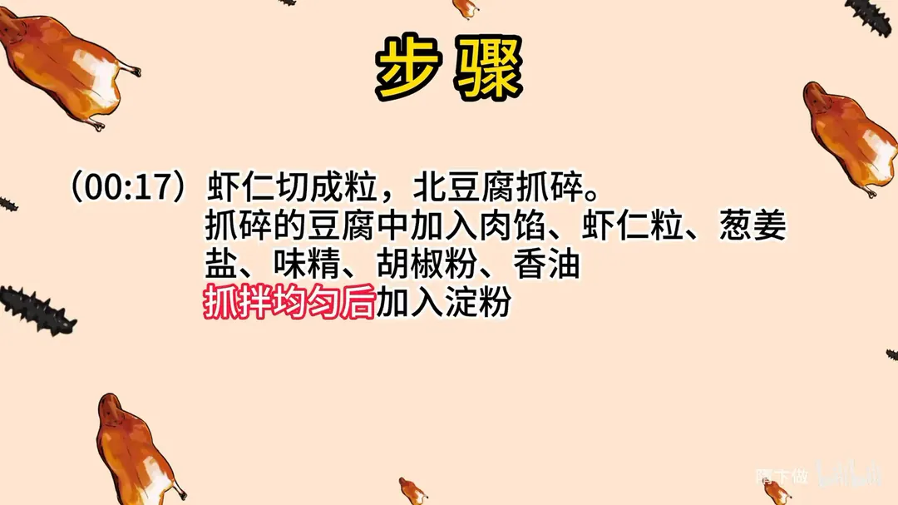
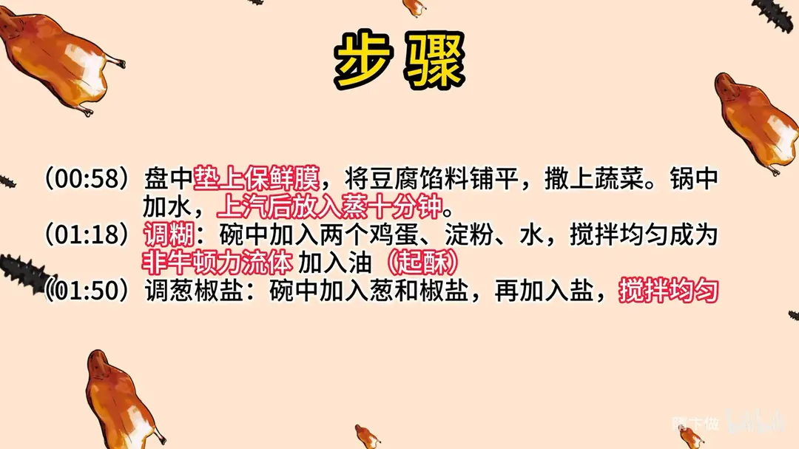
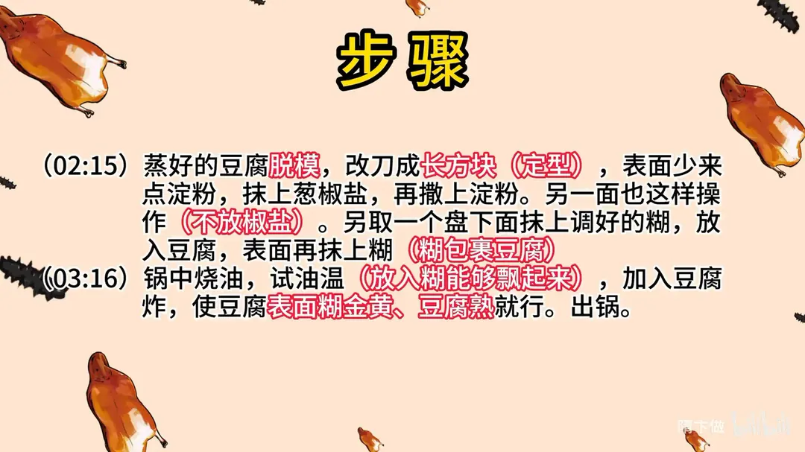

裹烧豆腐
隋卞一做。北豆腐 1 块抓碎，拌 100g 肉馅、50g 虾仁粒与葱姜、盐、味精、胡椒粉、香油，加 80g 淀粉上劲，铺盘撒蔬菜粒蒸 10 分钟。改刀后两面抹葱椒盐、挂淀粉，裹上鸡蛋淀粉糊，炸至金黄油亮。
原视频：https://www.bilibili.com/video/BV1ZC4y1d7fr
食材
虾仁、北豆腐、肉馅 等 12 样
| 类别 | 用料 | 用量 |
|---|---|---|
| 主料 | 虾仁 | 50g |
| 主料 | 北豆腐 | 1 块 |
| 主料 | 肉馅 | 100g |
| 配料 | 蔬菜粒 | 50g |
| 配料 | 葱姜 | 20g |
| 馅料调味 | 盐 | 3g |
| 馅料调味 | 味精 | 2g |
| 馅料调味 | 胡椒粉 | 1g |
| 馅料调味 | 香油 | 2g |
| 粉料 | 淀粉 | 80g |
| 糊料 | 鸡蛋 | 2 个 |
| 蘸料 | 葱椒盐 | 50g |
步骤
- 切配：虾仁切成粒，北豆腐抓碎。
- 拌馅：抓碎的豆腐中加入肉馅、虾仁粒、葱姜、盐、味精、胡椒粉、香油，抓拌均匀后加入淀粉。
- 铺盘：盘中垫上保鲜膜，将豆腐馅料铺平，撒上蔬菜粒。
- 蒸制：锅中加水，上汽后放入蒸 10 分钟。
- 调糊：碗中加入两个鸡蛋、淀粉、水，搅拌均匀成为非牛顿流体，再加入油（起酥）。
- 调葱椒盐：碗中加入葱和椒盐，再加入盐，搅拌均匀。
- 改刀挂粉：蒸好的豆腐脱模，改刀成长方块定型，表面少来点淀粉，抹上葱椒盐，再撒上淀粉；另一面也这样操作，不放椒盐。
- 裹糊：另取一个盘，底下抹上调好的糊，放入豆腐，表面再抹上糊，让糊包裹住豆腐。
- 炸制：锅中烧油，试油温（放入一点糊能飘起来即可），下入豆腐炸，炸至表面糊金黄、豆腐熟透就行，出锅。
小贴士
- 盘中一定要垫保鲜膜，蒸好的豆腐才好整块脱模。
- 糊调到非牛顿流体状，再加一点油，炸出来更酥。
- 豆腐两面只抹一面椒盐，另一面不放，避免过咸。
- 试油温用一点糊滴进锅里，糊能飘起来就说明温度够了。
讲解要点
难度：★★★☆☆（步骤多、要两次拍粉挂糊，难点是蒸后定型和糊的稠度）
为什么这么做
- 用北豆腐抓碎：北豆腐水分少、豆香足，抓碎后能和肉馅、虾仁粘成一体；嫩豆腐出水多，蒸完定不住。
- 加淀粉让豆腐「凝固」：豆腐拌馅会出水，淀粉吸水又把料粘住，蒸完才能改刀不散。
- 盘底垫保鲜膜：蒸好的豆腐坯很软，不垫膜一翻就碎，整块脱模全靠这一步。
- 抹椒盐后一定要拍淀粉，且只抹一面：椒盐给底味，淀粉是挂糊的「抓手」，不拍粉糊挂不住、炸时容易脱；两面都抹椒盐就过咸，一面足够。
- 糊里加油：油让糊炸后起酥、上色亮，不加则壳硬、颜色发暗。
- 糊打到「洗发膏」状：太稀挂不住，太稠壳厚而硬；能均匀裹住豆腐、不往下淌就对了。
- 大火定型、再蹲炸上色：高温让糊迅速结壳不脱，锅里多停一会儿颜色才均匀、里面才熟透。
容易翻车
- 豆腐坯压得太厚：三四厘米厚下锅，外面炸黑了里面还没透，尽量铺薄。
- 蒸的时间不够，坯子不定型，改刀就散。
- 糊太稀，裹不上或下锅就脱糊。
- 抹了椒盐却忘了拍淀粉，糊挂不牢。
- 油温不够就下锅，糊吸油、不成壳。
热评补充
- 豆腐坯一定要薄：有人用厚底盘做出来三四厘米厚，进锅外面都炸黑了里面还没熟；薄一点更容易炸透。
原片尾卡




原片文案
AI 字幕校准稿
挺有意思的，这个菜属于中国人自己的分子料理。这个菜搁全国来说会做的人不多，我也是机缘巧合在一本老书上面学会的。今天做这个视频，既是教你们，又是留了一份影视资料。裹烧豆腐。
虾仁要切一下，切成粒就行了。因为准备的东西太多了，不用记，我们会把资料放在片尾。一块北豆腐抓碎，抓得很碎也没关系。
然后加入肉馅、虾仁粒、葱姜米、盐、味精、胡椒粉，然后给它拌匀，加点香油。这会儿看着有点像小葱拌豆腐，不太像名菜了。然后加点淀粉——豆腐可能会出水，所以咱们要加点淀粉，让它凝固一下。
然后把它放到盘里边，盘底下要垫上一块保鲜膜，防止蒸完以后再粘上。加点蔬菜粒，抹平之后上锅蒸，锅烧开上气蒸它十分钟。
趁这个豆腐蒸着，我们调一个糊。两个鸡蛋加入淀粉，这糊打得稠了，加点水，打到像洗发膏那种状态。然后咱们还要加油，油是起酥的，不加点油，炸出来好看不了。
我们还有一个淮扬菜独有的调味手法——葱椒盐，老朋友都知道。葱和花椒面放到一起，然后里边加盐，搅拌一起，让这个葱和花椒盐充分地融合。
豆腐蒸好了，我们把它翻个个儿，这样就轻轻松松地把它拖出来了。给它改下刀，切成长方块就可以了。少打一点淀粉，要把这个葱椒盐也抹在上面，只抹一面的口味，一定要给它抹匀，味道让它均匀。然后再撒上淀粉——因为一会儿要挂糊，淀粉少了表面挂不住。翻一个，另外那边也是这样操作，只是不放那个椒盐。
下面抹上一层糊，放上豆腐，表面再放上一层糊，抹匀，四面都沾上糊。起锅烧油，试一下油温，掰点糊往里一倒，能浮上来就行了。然后把挂好糊的豆腐往里推，全程现在是大火，不用关小火。炸到金黄色，在锅里边停一会儿，让它蹲炸一会儿，这个颜色就非常好了，出锅，给它改下刀。
没吃过的，不知道为什么要这么麻烦。其实味道是很简单的，就是咸鲜香。你说味道多惊艳？这个真没多惊艳——很简单，你看出来它是什么味，它就是什么味。但是这个味道不管是老人小孩，我觉得都可以接受。挺有意思的，这个菜属于中国人自己的分子料理。这个菜麻烦就麻烦在配料多，做法真的很简单，做过一次两次应该就很熟练了。这个菜不需要那么强的烹饪技巧，只要让豆腐蒸完之后能定型，下一步就好多了。